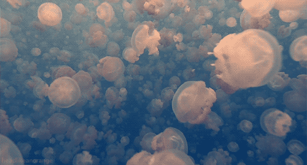

Gold jellyfish
황금해파리
학명:
Mastigias papua
by Lisa-Ann Gershwin & Peter Davie, 1998
분류:
| 계 | 동물계 |
| 문 | 자포동물문(Cnidaria) |
| 강 | 해파리강(Scyphozoa) |
| 목 | 리조스토메아목(Rhizostomeae) |
| 과 | 마스티기과(Mastigiidae) |
| 속 | 마스티기아스(Mastigias) |
특징:
금빛 해파리는 일반적으로 반투명 또는 투명한 종 모양의 몸체에 작은 금빛 또는 갈색 반점이 있어 이러한 이름이 붙었는데,
이 반점들은 주로 조직 내 섬유성 단백질 물질에 기인하며, 이에 따라 색이 다양할 수 있다.
비교적 작은 해파리로 우산의 지름은 약 20~30cm이다.
독특한 집단행동으로 알려져 있다.
물기둥의 특정 깊이에 밀집된 집합체를 형성하고, 조수나 햇빛과 같은 환경적 요인에 따라 종종 위아래로 움직이며,
이러한 집합체는 영양분을 나누고 포식자로부터 보호하기 위한 전략으로 여겨진다.
주로 플랑크톤, 작은 해양 생물, 해조류를 먹고 산다.
촉수를 이용하여 먹이를 포획한 다음 소화를 위해 중심 입으로 옮겨 삼킨다.
일반적으로 따뜻한 열대 및 아열대 물에서 발견되며, 종종 지표면 근처에서 발견되기도 한다